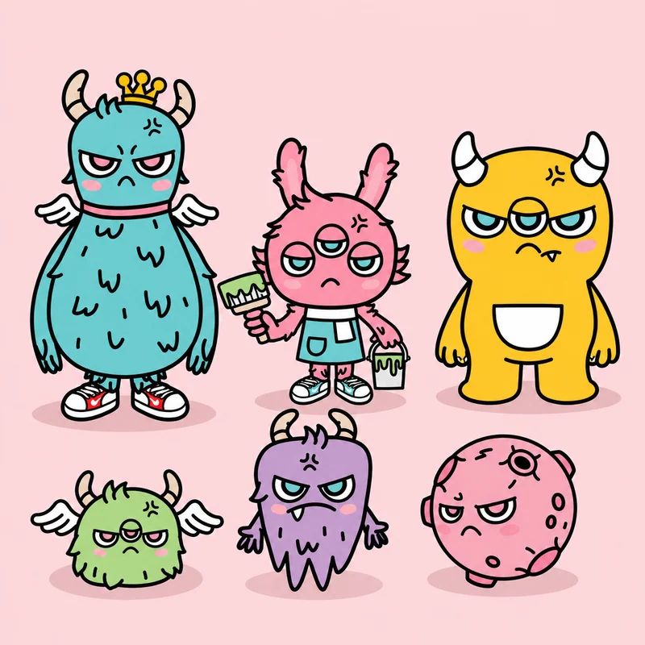
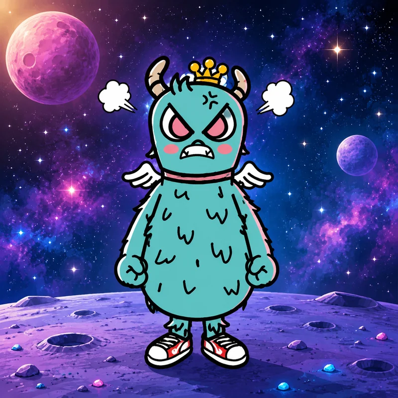
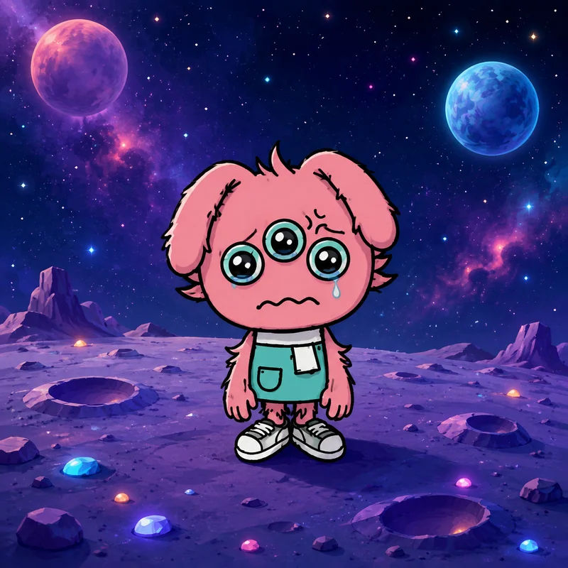
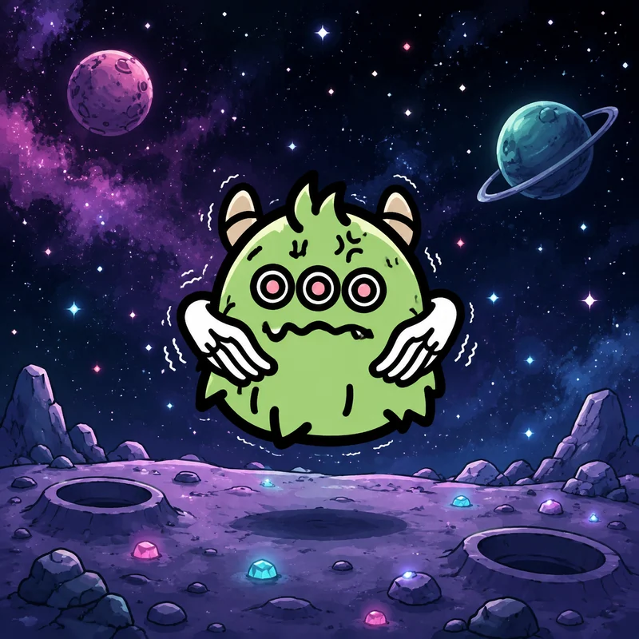
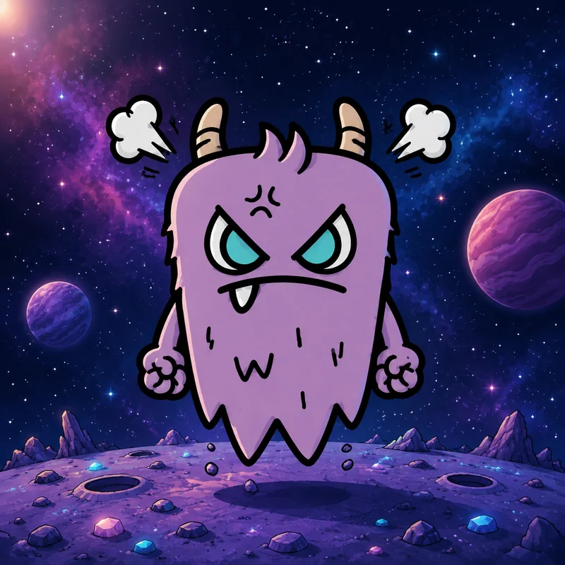
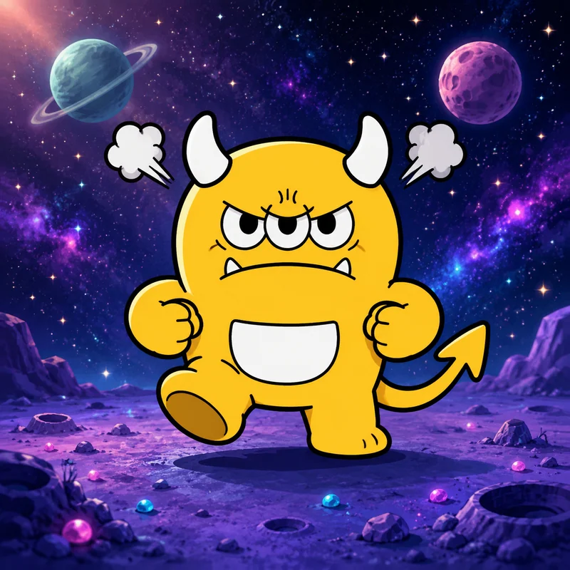

Furi PlanetFURI 星球FURI 星球Furi PlanetFuri プラネット
FURI PLANETFURI 星球FURI 星球FURI PLANETFURI PLANET
This page is the whole world in seven parts. Read it top to bottom, or jump to the part you need.這一頁用七個部分說完整個世界。你可以從頭讀到尾，或直接跳到你需要的那一部分。这一页用七个部分说完整個世界。你可以从头读到尾，或直接跳到你需要的那一部分。หน้านี้คือทั้งโลกในเจ็ดส่วน อ่านจากบนลงล่าง หรือกระโดดไปยังส่วนที่คุณต้องการこのページは、世界のすべてを7つの部分で示したものです。上から順に読むか、必要な部分へ飛んでください。
01
A planet with everything什麼都有的星球什么都有的星球ดาวที่มีทุกสิ่ง何もかもあった星
FURI PLANET was rich the way very few worlds are — water, ore, soil, and a light that reached the ground. Life did not struggle there. It sprawled.FURI PLANET 的豐饒是極少數世界才有的 —— 水、礦、土壤，還有一種能照到地面的光。那裡的生命不必掙扎，只是蔓延。FURI PLANET 的丰饶是极少数世界才有的 —— 水、矿、土壤，还有一种能照到地面的光。那里的生命不必挣扎，只是蔓延。FURI PLANET อุดมสมบูรณ์ในแบบที่มีเพียงไม่กี่โลกจะมี — น้ำ แร่แม่ ดิน และแสงที่ส่องถึงพื้นดิน ชีวิตที่นั่นไม่ต้องดิ้นรน แค่แผ่ขยายไปเองFURI PLANET は、ほとんどの世界が持たないほど豊かだった—水、鉱石、土、そして地に届く光。そこで生命は苦しまなかった。ただ広がっていた。
02
Then someone did the maths然後有人算了一筆帳然后有人算了一笔账แล้วก็มีคนคิดเลขขึ้นมาそして誰かが計算した
The extraction fleets arrived with contracts. They took the core, the water and the light, and they called it development.掠奪艦隊帶著合約抵達。他們取走了核心、水和光，並稱之為開發。掠夺舰队带着合约抵达。他们取走了核心、水和光，并称之为开发。กองเรือบักตัดมาถึงพร้อมสัญญา พวกเขาเอาแกน น้ำ และแสงไป แล้วเรียกสิ่งนั้นว่าการพัฒนา掴奪艘隊は契約を持って来た。核と水と光を持ち去り、それを開発と呼んだ。
03
The planet let go星球放手了星球放手了ดาวปล่อยมือ星が手を離した
Nothing dramatic. The ground stopped holding, the sky stopped arriving, and the green went out in less than one season.沒有什麼戲劇性的事。地面不再撐住，天空不再到來，綠色在不到一個季節裡就熄滅了。没有什么戏剧性的事。地面不再撑住，天空不再到来，绿色在不到一个季节里就熄灭了。ไม่มีอะไรดูตื่นเต้น พื้นดินไม่ยึดเหนี่ยวอีก ท้องฟ้าไม่มาอีก และสีเขียวดับลงในไม่ถึงหนึ่งฤดู劇的なことは何もなかった。地は支えるのをやめ、空は来なくなり、緑は一季節もたたないうちに消えた。
04
Only six remain只剩下六個只剩下六个เหลือเพียงหกคน残ったのは六人だけ
Six did not leave. Each of them took one thing that could not be replaced, and each of them has been carrying it since.有六個沒有離開。他們各自帶走了一樣無法被取代的東西，並且從那時起一直帶著它。有六个没有离开。他们各自带走了一样无法被取代的东西，并且从那时起一直带着它。มีหกคนที่ไม่ได้ไป แต่ละคนพาสิ่งหนึ่งที่ไม่สามารถทดแทนได้ไปด้วย และแต่ละคนก็แบกมันไว้ตั้งแต่นั้นมา六人は去らなかった。それぞれが代わりのきかないものを一つずつ持ち、そのひとつをずっと抱えている。
05
Mission任務任务ภารกิจ使命
Hold the pieces until the pieces can be put back together. That is the whole plan. Nobody promised it would work.守住這些碎片，直到碎片能被重新拼起來。這就是全部的計畫。沒有人保證它會成功。守住这些碎片，直到碎片能被重新拼起来。这就是全部的计划。没有人保证它会成功。ถือชิ้นส่วนไว้จนกว่าจะประกอบมันกลับคืนได้ นั่นคือแผนทั้งหมด ไม่มีใครรับปากว่ามันจะสำเร็จピースを、もう一度組み立てるまで持ち続ける。それが全部の計画。うまくいくとは誰も約束していない。
The world這個世界这个世界โลกนี้この世界
The six, and the world they stayed on六位守護者，與他們留下的世界六位守护者，与他们留下的世界หกคนกับโลกที่พวกเขาอยู่六人と、彼らが残った世界
Official FURI PLANET artwork — the six guardians together, and each of them standing on the world itself.官方 FURI PLANET 素材 —— 六位守護者合照，以及他們各自站在這個世界上的樣子。官方 FURI PLANET 素材 —— 六位守护者合照，以及他们各自站在这个世界上的样子。งานอาร์ต FURI PLANET ต้นฉบับ — ผู้พิทักษ์ทั้งหกรวมกัน และแต่ละคนยืนอยู่บนโลกนี้公式 FURI PLANET アート。六人の守護者がそろった一枚と、それぞれがこの世界に立つ姿。






Anger → Power憤怒 → 力量愤怒 → 力量ความโกรธ → พลัง怒り → 力
Anger is energy憤怒就是能量愤怒就是能量ความโกรธคือพลังงาน怒りはエネルギー
This is the part of FURI that is not merchandise. Whatever else the six guardians are, they are a method for dealing with the emotion people are most often told to hide.這是 FURI 不是商品的那一部分。無論六位守護者還是什麼，他們都是一套方法，用來處理那個最常被要求藏起來的情緒。这是 FURI 不是商品的那一部分。无论六位守护者还是什么，他们都是一套方法，用来处理那个最常被要求藏起来的情感。นี่คือส่วนของ FURI ที่ไม่ใช่สินค้า ไม่ว่าผู้พิทักษ์ทั้งหกจะเป็นอะไร พวกเขาคือวิธีจัดการกับอารมณ์ที่ผู้คนมักถูกบอกให้ซ่อนここはFURIの、物販ではない部分です。6人の守護者が何であれ、彼らは「隠せと言われがちな感情」の扱い方です。
See it看見它看见它มองเห็นมัน見つめる
Name the feeling before it names you.在意緒定義你之前，先定義它。在情绪定义你之前，先定义它。เรียกชื่อความรู้สึกก่อนที่มันจะเรียกชื่อคุณ感情に名前をつける。名前をつけられる前に。
Understand it理解它理解它เข้าใจมัน理解する
Ask where it came from. It always came from somewhere real.問它從哪裡來。它總是來自某個真實的地方。问它从哪里来。它总是来自某个真实的地方。ถามว่ามันมาจากไหน มันมาจากที่จริงเสมอどこから来たのか聞く。きっと本当の場所から来ている。
Express it表達它表达它แสดงมันออกมา表現する
Draw it, say it, move it. Unspoken anger does not disappear.畫出來、說出來、動起來。沒說出口的憤怒不會消失。画出来、说出来、动起来。没说出口的愤怒不会消失。วาดมัน พูดมัน ขยับมัน ความโกรธที่ไม่ได้พูดออกมาไม่ได้หายไป描く、言う、動く。言わなかった怒りは消えない。
Release it釋放它释放它ปล่อยมัน放つ
Let it move through you instead of living in you.讓它穿過你，而不是住進你。让它穿过你，而不是住进你。ปล่อยให้มันเคลื่อนผ่านตัวคุณ ไม่ใช่เข้ามาอาศัยอยู่ในตัวคุณ中に住ませるのではなく、通り抜けさせる。
Transform it轉化它转化它เปลี่ยนมัน変える
Turn anger into the power to protect and change.把憤怒變成守護與改變的力量。把愤怒变成守护与改变的力量。เปลี่ยนความโกรธให้เป็นพลังที่จะปกป้องและเปลี่ยนแปลง怒りを、守り、変える力にする。
Turn anger into the power to protect and change.把憤怒變成守護與改變的力量。把愤怒变成守护与改变的力量。เปลี่ยนความโกรธให้เป็นพลังที่จะปกป้องและเปลี่ยนแปลง怒りを、守り、変えていく力に。
The World世界世界โลก世界
Six things that could not be replaced六樣無法被取代的東西六样无法被取代的东西หกสิ่งที่ไม่สามารถทดแทนได้代えのきかない6つ
When the evacuation was called, six did not board. Each of them took one thing and has been carrying it since.撤離令下達時，有六個沒有登船。他們各自帶走了一樣東西，並從那時起一直帶著它。撤离令下达时，有六个没有登船。他们各自带走了一样东西，并从那時起一直带着它。เมื่อมีการเรียกอพยพ หกคนไม่ได้ขึ้นยาน แต่ละคนหยิบสิ่งหนึ่งไป และแบกมันมาตั้งแต่นั้น避難が告げられたとき、6人は乗らなかった。それぞれが一つだけ持ち、それ以来ずっと運んでいる。
Memory記憶记忆ความทรงจำ記憶
Held by Furi Prince. The archive of what the planet actually was, incomplete and unshared.由皇子守護。關於這顆星球究竟是什麼的檔案，並不完整，也從未分享。由皇子守护。关于这颗星球究竟是什么的档案，并不完整，也从未分享。Furi Prince ถือไว้ คลังบันทึกของสิ่งที่ดาวเคราะห์ดวงนี้เคยเป็น ไม่สมบูรณ์และยังไม่ได้แบ่งปันFuri Princeが持つ。この惑星が実際に何だったかの記録。不完全で、まだ誰にも渡していない。
Heartbeat心跳心跳เสียงหัวใจ鼓動
Held by Pinki. Literally a pulse — the proof that something here is still alive.由平奇守護。字面上的脈搏 —— 證明這裡還有東西活著。由平奇守护。字面上的脉搏 —— 证明这里还有东西活着。Pinki ถือไว้ คือชีพจรจริง ๆ — หลักฐานว่ายังมีบางสิ่งที่นี่ยังมีชีวิตPinkiが持つ。文字どおりの脈。ここにまだ生きているものがある証拠。
Light of Nature自然之光自然之光แสงแห่งธรรมชาติ自然の光
Held by Winggo. Daylight, stored in wings, spent one horizon at a time.由溫果守護。日光，儲存在翅膀裡，一個地平線一個地平線地花掉。由温果守护。日光，储存在翅膀里，一个地平线一个地平线地花掉。Winggo ถือไว้ แสงกลางวัน เก็บไว้ในปีก ใช้ไปทีละขอบฟ้าWinggoが持つ。昼の光。翼に蓄え、地平線ひとつぶんずつ使う。
Seed種子种子เมล็ดพันธุ์種
Held by Fluffu. Asleep, unopened, waiting for ground worth planting in.由芙芙守護。沉睡著，未曾打開，等待值得種下的土地。由芙芙守护。沉睡着，未曾打开，等待值得种下的土地。Fluffu ถือไว้ หลับอยู่ ยังไม่ถูกเปิด รอที่ดินที่คู่ควรจะหว่านลงไปFluffuが持つ。眠ったまま、開かれず、植えるに値する地面を待っている。
Material Cycle物質循環物质循环วัฏจักรวัตถุ素材の循環
Held by Boxo. Everything that was destroyed, still available to be rebuilt.由盒子守護。所有被摧毀的東西，都還能被重建。由盒子守护。所有被摧毁的东西，都还能被重建。Boxo ถือไว้ ทุกสิ่งที่ถูกทำลาย ยังคงสามารถนำมาสร้างใหม่ได้Boxoが持つ。壊されたものすべて。まだ建て直せる形で。
Water & Emotion水與情緒水与情绪น้ำและอารมณ์水と感情
Held by Bubi. The last ocean, and the insistence that feelings move rather than stay.由布比守護。最後一片海洋，以及「感受應該流動而不是停留」的堅持。由布比守护。最后一片海洋，以及“感受应该流动而不是停留”的坚持。Bubi ถือไว้ มหาสมุทรแห่งสุดท้าย และความยืนยันว่าความรู้สึกต้องเคลื่อนไป ไม่ใช่หยุดอยู่Bubiが持つ。最後の海。そして、感情はとどまるより動くものだという主張。
Relationships角色關係角色关系ความสัมพันธ์関係
How they connect他們如何相連他们如何相连พวกเขาเชื่อมโยงกันอย่างไรつながり方
Six posters are not a world. These are the friendships, the arguments and the dependencies that make the six a group.六張海報不是一個世界。這些是讓六個人成為一個群體的友誼、爭執與依賴。六张海报不是一个世界。这些是让六个人成为一个群体的友谊、争执与依赖。โปสเตอร์หกใบไม่ใช่โลก ทั้งหมดนี้คือมิตรภาพ การโต้เถียง และการพึ่งพากัน ที่ทำให้ทั้งหกเป็นกลุ่มเดียวกันポスター6枚では世界になりません。ここにあるのは、6人をひとつの集まりにしている友情と、口論と、依存です。
How they connect他們如何相連他们如何相连พวกเขาเชื่อมโยงกันอย่างไรつながり方
Select a guardian to see how they connect.選擇一位守護者，看看他與誰相連。选择一位守护者，看看他与谁相连。เลือกผู้พิทักษ์เพื่อดูความเชื่อมโยง守護者を選ぶと、つながりが見えます。
Relationships are provisional and pending final confirmation.
Timeline時間線时间线ไทม์ไลน์タイムライン
Timeline時間線时间线ไทม์ไลน์タイムライン
Events are added here as the animation and comics are released. Nothing is listed yet, because nothing is released yet.隨著動畫與漫畫推出，事件將陸續補充於此。目前尚未列出任何內容，因為還沒有任何內容發佈。随着动画与漫画推出，事件将陆续补充于此。目前尚未列出任何内容，因为还没有任何内容发布。อีเวนต์จะถูกเพิ่มที่นี่เมื่อแอนิเมชันและการ์ตูนเปิดตัว ยังไม่มีรายการใด เพราะยังไม่มีอะไรเปิดตัวアニメーションとコミックの公開に合わせて、ここにイベントを追加します。まだ何も公開していないので、掲載はありません。
Common questions常見問題常见问题คำถามที่พบบ่อยよくある質問
FURI MONSTER, answered關於 FURI MONSTER关于 FURI MONSTERFURI MONSTER ตอบให้FURI MONSTER について
What is FURI MONSTER?FURI MONSTER 是什麼？FURI MONSTER 是什么？FURI MONSTER คืออะไร?FURI MONSTER とは？
FURI MONSTER is a character IP about turning anger into power. Six guardians each carry one way that anger needs to move: seen, understood, expressed, released, transformed. It is a world, a cast, and a method for handling an emotion people are usually told to hide.FURI MONSTER 是一個把憤怒轉化為力量的 IP。六位守護者各自承載憤怒需要走過的其中一步：被看見、被理解、被表達、被釋放、被轉化。它既是一個世界、一組角色，也是一套面對「通常被要求藏起來的情緒」的方法。FURI MONSTER 是一个把愤怒转化为力量的 IP。六位守护者各自承载愤怒需要走过的其中一步：被看见、被理解、被表达、被释放、被转化。它既是一个世界、一组角色，也是一套面对「通常被要求藏起来的情绪」的方法。FURI MONSTER คือ IP ตัวละครที่ว่าด้วยการเปลี่ยนความโกรธให้เป็นพลัง ผู้พิทักษ์ทั้งหกแต่ละตนดูแลหนึ่งขั้นที่ความโกรธต้องผ่าน: ถูกมองเห็น เข้าใจ แสดงออก ปล่อยวาง เปลี่ยนแปลง เป็นทั้งโลก ตัวละคร และวิธีรับมือกับอารมณ์ที่คนมักถูกบอกให้ซ่อนFURI MONSTER は、怒りを力に変えるキャラクターIPです。六人の守護者が、怒りが通るべき段階をひとつずつ担います——見られる、理解される、表現される、手放される、変わる。世界であり、キャラクターであり、普段は隠すように言われる感情への向き合い方です。
Who are the six guardians?六位守護者是誰？六位守护者是谁？ผู้พิทักษ์ทั้งหกคือใคร?六人の守護者とは？
Furi Prince carries memory, Pinki carries connection, Winggo carries nature’s light, Fluffu carries growth, Boxo carries the cycle, and Bubi carries feeling. Their names are written in Latin script in every language; the localised forms are shown alongside on each character page.Furi Prince 承載記憶，Pinki 承載連結，Winggo 承載自然之光，Fluffu 承載成長，Boxo 承載循環，Bubi 承載感受。他們的名字在每個語言中都寫成拉丁字母；各地語言的寫法會在各自的角色頁並列顯示。Furi Prince 承载记忆，Pinki 承载连接，Winggo 承载自然之光，Fluffu 承载成长，Boxo 承载循环，Bubi 承载感受。他们的名字在每个语言中都写成拉丁字母；各地语言的写法会在各自的角色页并列显示。Furi Prince ดูแลความทรงจำ Pinki ดูแลความเชื่อมโยง Winggo ดูแลแสงแห่งธรรมชาติ Fluffu ดูแลการเติบโต Boxo ดูแลวัฏจักร และ Bubi ดูแลความรู้สึก ชื่อของพวกเขาเขียนด้วยอักษรละตินในทุกภาษา ส่วนรูปแบบท้องถิ่นแสดงคู่กันในหน้าตัวละครแต่ละตนFuri Prince は記憶、Pinki はつながり、Winggo は自然の光、Fluffu は成長、Boxo は循環、Bubi は感情を担います。名前はどの言語でもラテン文字で表記し、各国語の表記は各キャラクターページに併記しています。
Who created FURI MONSTER?誰創造了 FURI MONSTER？谁创造了 FURI MONSTER？ใครสร้าง FURI MONSTER?FURI MONSTER を作ったのは？
Sherman, and it started with a bad day and a drawing tablet. The creator page tells the story rather than listing a CV.是 Sherman，起點是一個糟糕的日子和一台繪圖板。創作者頁說的是這個故事，而不是一份履歷。是 Sherman，起点是一个糟糕的日子和一块绘图板。创作者页说的是这个故事，而不是一份简历。Sherman เริ่มจากวันที่แย่กับแท็บเล็ตวาดรูป หน้าผู้สร้างเล่าเรื่องนั้นมากกว่าจะเป็นประวัติย่อSherman です。始まりは、いいない日とペンタブレットでした。クリエイターページでは経歴ではなく、その物語を紹介しています。
Read the creator story閱讀創作者的故事阅读创作者的故事อ่านเรื่องของผู้สร้างクリエイターの物語を読む
Is FURI MONSTER available for licensing?FURI MONSTER 可以授權嗎？FURI MONSTER 可以授权吗？FURI MONSTER ให้ลิขสิทธิ์ได้ไหม?FURI MONSTER のライセンスは可能？
Yes. Toys and collectibles, fashion and accessories, food and beverage, stationery and publishing, digital and games, events and location-based projects, education and wellbeing.可以。包括玩具與收藏品、服飾與配件、食品與飲品、文具與出版、數位與遊戲、活動與實景娛樂、教育與身心健康。可以。包括玩具与收藏品、服饰与配件、食品与饮品、文具与出版、数字与游戏、活动与实景娱乐、教育与身心健康。ได้ ทั้งของเล่นและของสะสม แฟชั่นและเครื่องประดับ อาหารและเครื่องดื่ม เครื่องเขียนและการพิมพ์ ดิจิตัลและเกม งานอีเวนต์และสถานที่จริง การศึกษาและสุขภาพ可能です。おもちゃとコレクタブル、ファッションとアクセサリー、食品と飲料、文房具と出版、デジタルとゲーム、イベントとロケーション型、教育とウェルビーイング。
What languages is this site in?這個網站有哪幾種語言？这个网站有哪几种语言？เว็บไซต์นี้มีกี่ภาษา?このサイトの言語は？
Five: English, Traditional Chinese, Simplified Chinese, Thai and Japanese. Switch at any time from the header — every page carries all five, so nothing reloads and no page is a translation of another.五種：英文、繁體中文、簡體中文、泰文與日文。可隨時在頁首切換 —— 每一頁都同時包含五種語言，所以不會重新載入，也沒有哪一頁是另一頁的翻譯。五种：英文、繁体中文、简体中文、泰文与日文。可随时在页首切换 —— 每一页都同时包含五种语言，所以不会重新加载，也没有哪一页是另一页的翻译。ห้าภาษา: อังกฤษ จีนตัวเต็ม จีนตัวย่อ ไทย และญี่ปุ่น สลับได้ทุกเมื่อจากส่วนหัว ทุกหน้ามีทั้งห้าภาษา จึงไม่ต้องโหลดใหม่ และไม่มีหน้าใดเป็นการแปลของอีกหน้า5言語：英語・繁体字中国語・簡体字中国語・タイ語・日本語。ヘッダーからいつでも切り替えられます。すべてのページが5言語を併せ持つため、再読み込みは不要で、どれかのページが別のページの翻訳という関係でもありません。
Can I buy FURI MONSTER products?可以買到 FURI MONSTER 產品嗎？可以买到 FURI MONSTER 产品吗？ซื้อสินค้า FURI MONSTER ได้ไหม?FURI MONSTER の商品は買えますか？
Not yet. The collections on this site are concept directions, and nothing is on sale. A shop is planned; the order buttons stay disabled until then rather than taking an order that cannot be fulfilled.暫時未可以。本網站的系列屬於概念方向，目前沒有任何商品發售。網店已在規劃中；在此之前訂購按鈕會保持停用，而不會接受無法履行的訂單。暂时未可以。本网站的系列属于概念方向，目前没有任何商品发售。网店已在规划中；在此之前订购按钮会保持停用，而不会接受无法履行的订单。ยังไม่ได้ คอลเลกชันบนเว็บนี้เป็นแนวคิด ยังไม่มีสินค้าจำหน่าย มีแผนจะเปิดร้าน ปุ่มสั่งซื้อจะปิดไว้จนถึงตอนนั้น แทนที่จะรับออร์เดอร์ที่ส่งของไม่ได้まだです。このサイトのコレクションはコンセプト段階で、販売中の商品はありません。ショップは計画中で、それまでは注文ボタンは無効のままにします。